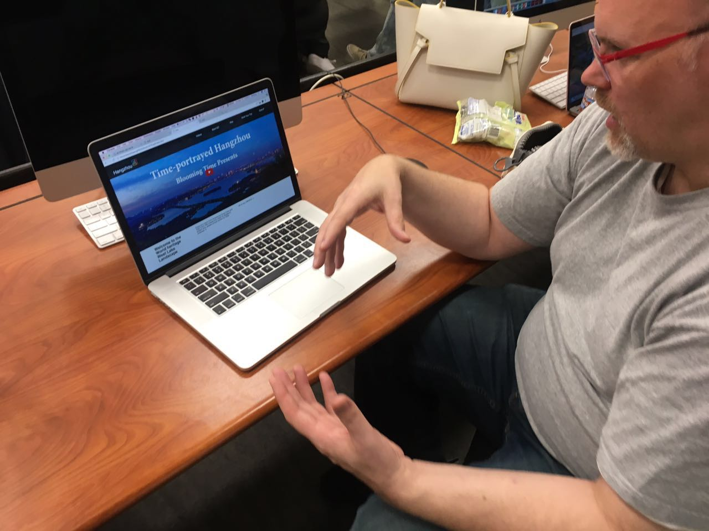

Audience Test Result
Audience 1
Our first audience likes our idea of building a trip planner and introduce deeper information about Hangzhou than the other existing website does. She suggested us to add tool tips to show descriptions and links to official website of places when hover on to the place lists on our planner page. She also gave another very useful advise that the website could generate a PDF or send a email of users planner.
Audience 2
The second audience started to test our project by watching the video; However, he think that the video makes him confuse about the main theme of our project. He recommended us to reorder our navigation bar to make it easier for user to understand the main purpose of our project.
Both of our audience has mentioned that the video on the homepage was too long to watch. When scroll down the pages, both of them feels not comfortable with that and suggested uss to imporve that.